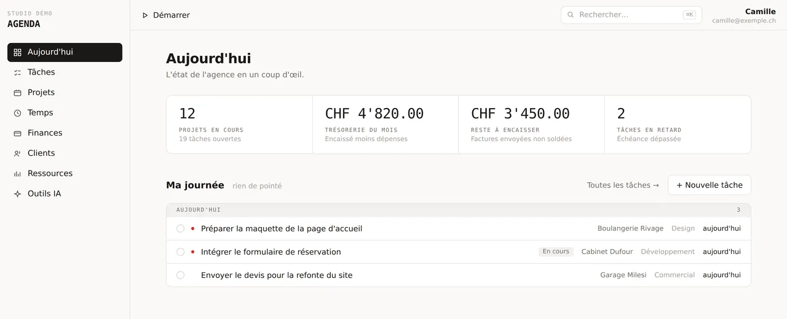

« Où en est ce dossier ? »
L'écran d'ouverture réunit les projets en cours, la trésorerie du mois, les montants restant à encaisser et les tâches du jour. Une équipe qui reprend un dossier après trois semaines en retrouve l'état complet sur une seule page.
Capture avec des données de démonstration